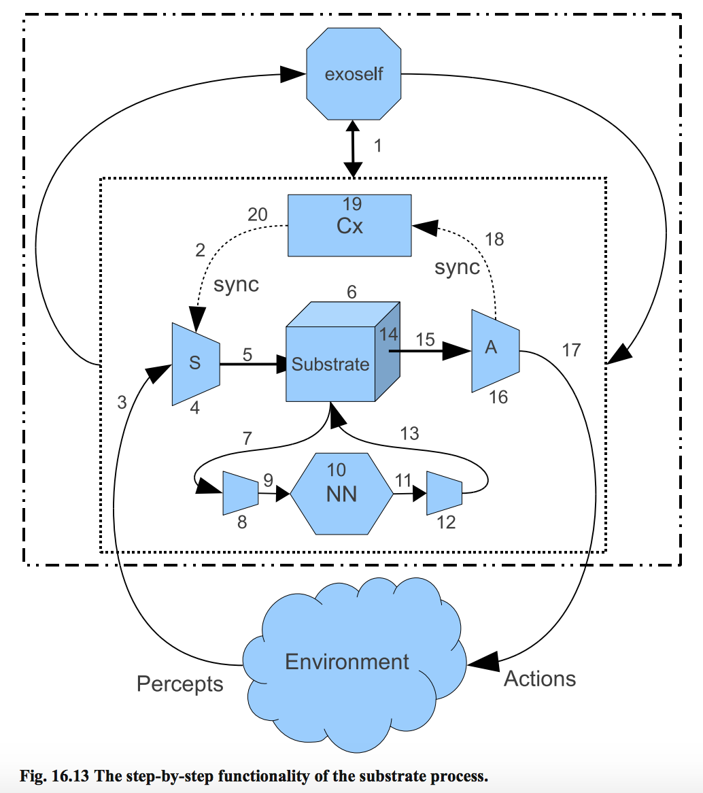

Substrate Encoding for Neural Networks in Algorithmic Trading
View SourceIntroduction
Substrate encoding is a powerful neural network encoding technique that provides significant advantages for trading applications. This document explains how substrate encoding works in Bardo's algorithmic trading framework and how to use it effectively.
What is Substrate Encoding?
Substrate encoding (also known as Hypercube-based Neuroevolution of Augmenting Topologies or HyperNEAT) is a technique that encodes neural networks with a geometric interpretation of the problem domain. Rather than directly evolving connection weights in a fixed topology, substrate encoding evolves patterns of connectivity between neurons placed in a geometric space.
Why Use Substrate Encoding for Trading?
Traditional neural networks for trading face several challenges:
- Time series complexity: Market data contains complex temporal patterns
- Multi-scale patterns: Important patterns exist at different timeframes
- Sparse relationships: Only certain combinations of inputs matter
- Overfitting: It's easy to fit to noise rather than signal
Substrate encoding helps address these challenges by:
- Geometric interpretation: Maps market data to a coordinate space
- Regular patterns: Captures geometric regularities in data
- Efficient representation: Compresses complex patterns into fewer parameters
- Built-in regularization: Provides natural constraints on model complexity
How Substrate Encoding Works in Bardo
In Bardo's algorithmic trading system, substrate encoding maps market data into a 3D coordinate space:
- X-axis (time): From recent to older candles
- Y-axis (price): From high to low price levels
- Z-axis (data type): Different types of data (OHLC, volume, indicators)

Key Components
- Input Encoding: Market data is converted into a 3D grid
- Neuron Placement: Neurons are placed at specific coordinates
- Connectivity Patterns: Connections are established based on geometric rules
- Weight Assignment: Connection weights are derived from patterns
Implementation Details
1. Creating a Substrate-Encoded Genotype
The first step is to create a genotype that uses substrate encoding:
genotype = Bardo.Examples.Applications.AlgoTrading.SubstrateEncoding.create_substrate_genotype(%{
input_time_points: 60, # 60 time periods of data
input_price_levels: 20, # 20 price levels
input_data_types: 10, # 10 different data types
hidden_layers: 2, # 2 hidden layers
hidden_neurons_per_layer: 20, # 20 neurons per hidden layer
output_neurons: 3 # 3 outputs (direction, size, risk)
})This function:
- Creates input neurons arranged in a 3D grid
- Adds hidden layers with neurons in geometric patterns
- Adds output neurons at appropriate coordinates
- Establishes initial connectivity based on geometric rules
2. Converting Market Data to Substrate Format
When processing market data, you need to convert it to the substrate format:
grid = Bardo.Examples.Applications.AlgoTrading.SubstrateEncoding.convert_price_data_to_substrate(
price_data, # List of price candles
indicators, # Map of technical indicators
60, 20, 10 # Dimensions matching the genotype
)This function:
- Maps price data into a 3D grid representation
- Places different data types along the Z-axis
- Uses activation functions to represent price levels
- Normalizes all values to appropriate ranges
3. Activating the Neural Network
Before activating the neural network, the grid needs to be flattened to match the input neurons:
inputs = Bardo.Examples.Applications.AlgoTrading.SubstrateEncoding.flatten_substrate_grid(
grid, genotype
)
# Activate the neural network with the inputs
{:ok, outputs} = Bardo.AgentManager.Cortex.activate(cortex, inputs)The flattening process:
- Maps each point in the 3D grid to the corresponding input neuron
- Matches coordinates in the grid to substrate coordinates of neurons
- Creates a map of neuron IDs to input values
Evolutionary Process with Substrate Encoding
When evolving substrate-encoded networks:
- Initialization: Start with a population of substrate-encoded networks
- Evaluation: Test networks on the trading simulator
- Selection: Select the best-performing networks
- Mutation: Modify connectivity patterns and weights
- Reproduction: Create the next generation
- Repeat: Continue until convergence or generation limit
The key advantage is that mutations affect connectivity patterns rather than individual weights, allowing for more effective exploration of the solution space.
Practical Example: Forex Trading
Here's a complete example of using substrate encoding for forex trading:
# Configure experiment with substrate encoding
config = %{
market: :forex,
symbol: "EURUSD",
timeframe: 15,
population_size: 100,
generations: 100,
use_substrate: true, # Enable substrate encoding
input_time_points: 60,
input_price_levels: 20,
input_data_types: 10
}
# Run the experiment
Bardo.Examples.Applications.AlgoTrading.run(:substrate_experiment, config)
# Test the best agent
Bardo.Examples.Applications.AlgoTrading.test_best_agent(:substrate_experiment)
# Get the best agent for deployment
{:ok, best_agent} = Bardo.Examples.Applications.AlgoTrading.DistributedTraining.get_best_agent(:substrate_experiment)
# Deploy to live trading
{:ok, agent_id} = Bardo.Examples.Applications.AlgoTrading.LiveAgent.start_link(
:live_agent,
best_agent,
broker_module,
broker_config,
[substrate_encoding: true] # Important to use substrate encoding for live data too
)Advanced Customization
You can customize substrate encoding for specific trading applications:
Custom Coordinate Mappings
# Use a different coordinate system
custom_mapping = fn price_data, indicators, dims ->
# Custom mapping logic...
grid
end
# Use the custom mapping in your configuration
config = %{
# ...
use_substrate: true,
substrate_mapping: custom_mapping
}Different Activation Functions
# Create substrate with different activation functions
genotype = Bardo.Examples.Applications.AlgoTrading.SubstrateEncoding.create_substrate_genotype(%{
# ...
activation_functions: %{
input: :tanh,
hidden: :relu,
output: :sigmoid
}
})Irregular Neuron Distributions
# Create substrate with custom neuron placement
genotype = Bardo.Examples.Applications.AlgoTrading.SubstrateEncoding.create_substrate_genotype(%{
# ...
neuron_placement: :concentrated, # More neurons in recent timeframes
concentration_factor: 2.0 # How concentrated neurons are
})Performance Considerations
Substrate encoding has some implications for performance:
- Training time: Typically requires more generations than direct encoding
- Evaluation efficiency: Faster evaluation due to more regular structure
- Memory usage: Can be higher due to the geometric representation
- Runtime performance: Usually comparable to standard neural networks
For best results:
- Use distributed training for larger population sizes
- Start with smaller networks and gradually increase complexity
- Tune mutation rates for substrate-specific operations
- Consider population diversity to avoid premature convergence
Conclusion
Substrate encoding is a powerful technique for algorithmic trading that leverages geometric patterns in market data. By using this approach, you can create trading systems that are more robust, adaptable, and capable of capturing complex market dynamics.
For more information, see the Algorithmic Trading Guide and Example Configurations.